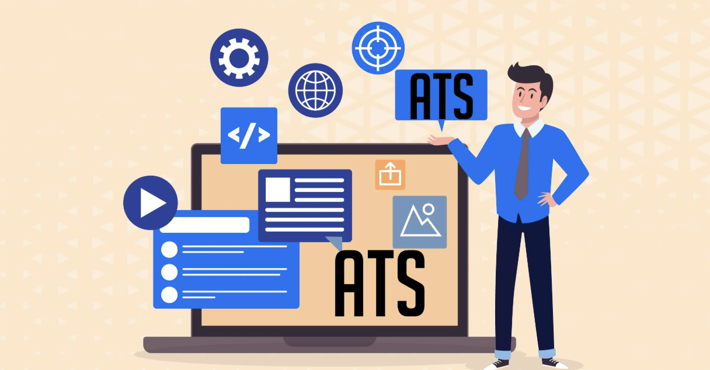

Applicant Tracking Systems (ATS) are software tools used by employers and recruiters to filter and manage resumes. Many companies rely on ATS to streamline the hiring process. ATS helps in faster resume screening, improved candidate matching, reduced human bias, and better organization. An ATS-optimized resume can improve your chances with hiring managers.